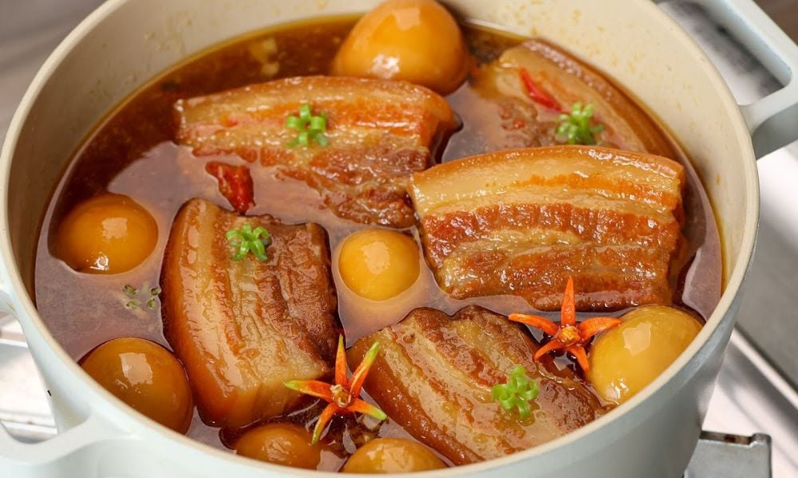

Thịt kho hột vịt (hay còn gọi là thịt kho tàu) là món ăn không thể thiếu trong mâm cỗ Tết của người dân Nam Bộ. Nồi thịt kho đậm đà với màu cánh gián đặc trưng, vị béo của thịt ba chỉ hòa quyện cùng vị bùi của trứng vịt, tạo nên một hương vị ấm cúng, gần gũi. Trong những ngày đầu năm Bính Ngọ 2026, nồi thịt kho tàu luôn được chuẩn bị sẵn để mời khách và dùng trong các bữa cơm sum họp gia đình, ăn kèm với dưa giá hoặc củ kiệu muối chua.
Ý nghĩa: Thể hiện sự hòa hợp, đoàn viên và mong cầu một năm mới "mọi sự tròn đầy, vuông vức". Nguyên liệu: Thịt ba rọi, hột vịt (trứng vịt), nước dừa tươi, nước mắm ngon, gia vị.